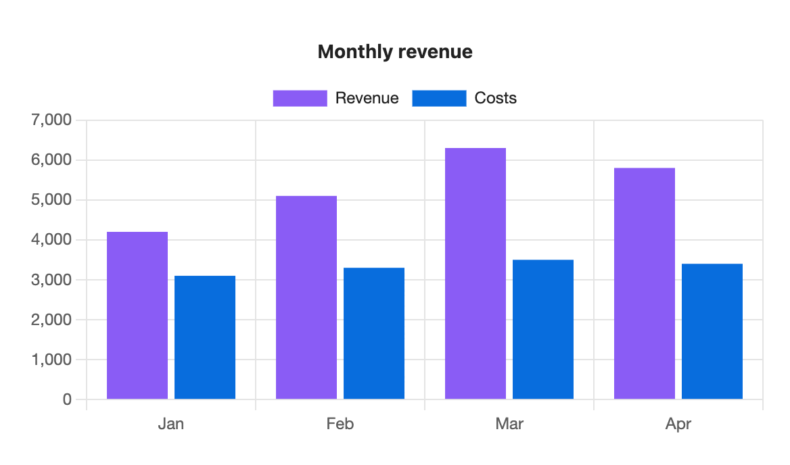

Options reference
Options go above the --- line, one per line, written key: value. Only type is required. Keys are lower case, and values can be wrapped in quotes.
All options
| Option | Values | Default | What it does |
|---|---|---|---|
type | bar line area pie doughnut scatter radar | required | The chart type. |
title | any text | none | Text above the chart. |
x-label | any text | none | Title for the label axis. |
y-label | any text | none | Title for the value axis. |
legend | top bottom none | top, or none for one series | Where the list of series or slices goes. |
height | 120 to 1200 | 300, or your setting | Chart height in pixels. The width always fills the note. |
stacked | true false | false | Stack the series on top of each other. |
horizontal | true false | false | Draw bars left to right. |
colors | hex colours, comma separated | none | Colours for this chart only. Overrides palette. See Colours and palettes. |
palette | a palette name | your default palette | Use a palette from settings. |
source | a tag such as "#daily", or a folder path | none | Draw from note properties instead of a table. |
x | a property name | none | With source: the property along the x axis. |
y | property names, comma separated | none | With source: the properties to plot. |
yes and no also work for true and false. A height outside 120 to 1200 is ignored with a warning.
Which options work on which type
Options that don't apply to a type are ignored without a warning, so you can switch type freely.
| Option | Bar | Line | Area | Pie | Doughnut | Scatter | Radar |
|---|---|---|---|---|---|---|---|
title, legend, height | Yes | Yes | Yes | Yes | Yes | Yes | Yes |
colors, palette | Yes | Yes | Yes | Yes | Yes | Yes | Yes |
x-label, y-label | Yes | Yes | Yes | No | No | Yes | No |
stacked | Yes | Yes | Yes | No | No | No | No |
horizontal | Yes | No | No | No | No | No | No |
source, x, y | Yes | Yes | Yes | Yes | Yes | Yes | Yes |
Misspelt options
An option the plugin doesn't know shows a warning under the chart, and the chart still draws. If the key is close to a real one, the warning suggests it:

```s-chart
type: bar
title: Monthly revenue
pallet: brand
---
| Month | Revenue | Costs |
| ----- | ------- | ----- |
| Jan | 4200 | 3100 |
| Feb | 5100 | 3300 |
| Mar | 6300 | 3500 |
| Apr | 5800 | 3400 |
```